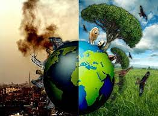

Môi trường
là một khái niệm mang ý nghĩa rất rộng, hiểu một cách đơn giản là những sự vật, những sinh vật
cây cối, côn trùng, những yếu tố tự nhiên và nhân tạo bao quanh
đời sống bên ngoài của một hệ thống hoặc một cá thể, ảnh hưởng tới
con ngời và tác động đến các hoạt động sống của con người như không khí, nước,
độ ẩm, xã hội loài người

Tuy nhiên,
mặc dù có lẽ ai cũng có những nhận thức về tầm quan trọng của môi trường
nhưng sự thật đau lòng là môi trường của chúng ta đang dần dần bị tàn phá
một cách nghiêm trọng với nhiều loại như: ô nhiễm nguồn nước, ô nhiễm không khí
ô nhiễm tiếng ồn,... Tất cả những kiểu ô nhiễm nói trên đều có điểm chung là gây ảnh
hưởng đặc biệt xấu đến tinh thần và sức khỏe của con người nói riêng và cả Trái Đất nói riêng.
Xót xa làm sao khi chứng kiến những cánh rừng ranh mơn mởn những đồi núi phủ khắp lá cây giờ đây
đã trở thành đồi trọc, cây xanh bị chặt phá. Thật tiếc thương làm sao khi đọc những tin tức về hàng
nghìn người mắc bệnh do ô nhiễm không khí và hàng trăm người đã ra đi mãi mãi cũng vì ô nhiễm môi trường
và còn rất rất nhiều ảnh hưởng của ô nhiễm môi trường gây ra cho cuộc sống của chúng ta. Và có lẽ ai ai cũng nhận ra
nguyên nhân của sự tàn phá này là do đâu.

Nguyên nhân
của ô nhiễm môi trường không phải là do yếu tố bên ngoài mà chủ yếu là đến từ
chính con người. Ô nhiễm môi trường được xuất phát từ những việc làm vô cùng nhỏ mà lại lớn đặc biệt là việc xả rác bừa bãi của mỗi người.
Những nhà máy xí nghiệp mọc lên như nấm, liên tục xả khói ra môi trường để sản xuất kiếm lợi nhuận
cây cối, những cánh rừng ngày ngày bị đốn chặt mà khó có thể kiểm soát chỉ để phục vụ lợi ích kinh tế của nhiều người, rồi những vụ cháy rừng như ở Australia đã làm tổn hại nghiêm
trọng tới ngôi nhà của chúng ta. Và nói chung, đều là do ý thức và sự ích kỉ chỉ nghĩ đến lợi ích bản thân của nhiều người, nhiều cá nhân, nhiều tổ
chức mà quên đi chính việc làm vì lợi ích cá nhân lại đang dần dần giết chết chính mình.

Giải pháp
để giảm thiểu vấn nạn ô nhiễm môi trường cũng được nhiều cá nhân, tổ chức triển khai dưới nhiều hình thức, lĩnh vực như:
tuyên truyền, chế tạo sản phẩm, thậm chí là tích hợp những kiến thức về môi trường vào những buổi chuyên đề của trường học cho
các bạn, các em học sinh có nhận thức về thế giới chúng ta đang sống và tầm quan trọng về môi trường. Đã có những người phát minh ra
những sản phẩm rất độc đáo và hiệu quả. Đặc biệt phải kể đến "Hệ thống tái chế rác thải" Sản phẩm này nhằm vào nguồn rác thải sinh hoạt. Nó sử dụng năng lượng mặt trời để chuyển đổi các loại rác hữu cơ thành khí biogas dùng trong nấu nướng và nguồn dinh dưỡng cho cây trồng.
Những ý tưởng độc đáo,sản phẩm có ý nghĩa, và những lời tuyên truyền súc tích đã góp phần rất lớn cải thiện môi trường mà chúng ta đang sống trong thời đại hiện nay.
Tuy nhiên, có lẽ như vật là chưa đủ, bởi những cột khói vẫn được xả, biển vẫn đang ngày ngày bị rác thải "tấn công". Nói đơn giản, vấn đề này chỉ có thể hạn chế nhưng không thể
chấm dứt hoàn toàn.

Nhận thấy
được tầm quan trọng của môi trường và những mối nguy hại mà ô nhiễm môi trường mang lại cho cuộc sống
và để ý rằng mặc dù môi trường được phổ biến rộng rãi trong nhiều lĩnh vực nhưng với một lĩnh vực mà rất rất nhiều người sử dụng và
dễ tiếp cận, đó là phim ảnh, thì chưa có nhiều phim, phim ngắn nói về vấn đế này. Do vậy, ngày hôm nay, em muốn đem đến một ý tưởng đó là
làm một phim ngắn về môi trường từ quá khứ đến tương lai để góp phần nào đó hạn chế được những việc làm đáng báo động đối với môi trường.